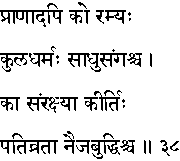
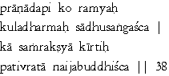

|

|
Verse 38 - Meaning:
Q: What (ko) should be dearer (ramyah) to one more than even one's life (praanad-api)?
A: One's family traditions (kula-dharmah) and association with Holy men.(saadhu-samgas-ca)
Q:What (kaa) should one protect ? (samrakshyaa) ?
A: One's good name (kiirtih), one's devoted wife (pativrataa) and one's intelligence (or the common sense). (naija-buddhis-ca)
|